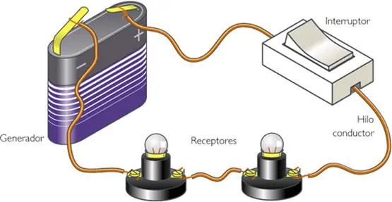

TECNOLOGÍA

¿Qué es un circuito eléctrico?
Un Circuito Eléctrico es un conjunto de elementos conectados entre si por los que puede circular una corriente eléctrica.
La corriente eléctrica es un movimiento de electrones, por lo tanto, cualquier circuito debe permitir el paso de los electrones por los elementos que lo componen. Solo habrá paso de electrones por el circuito si el circuito es un circuito cerrado.
Los circuitos eléctricos son circuitos cerrados, aunque podemos abrir el circuito en algún momento para interrumpir el paso de la corriente mediante un interruptor, pulsador u otro elemento del circuito.
Componentes de un circuito eléctrico
Las partes de un circuito eléctrico básico son:
Generador: producen y mantienen la corriente eléctrica por el circuito.
Conductores: es por donde se mueve la corriente eléctrica de un elemento a otro del circuito.
Receptores: son los elementos que transforman la energía eléctrica que les llega en otro tipo de energía.
Elementos de mando o control (interruptor): permiten dirigir o cortar a voluntad el paso de la corriente eléctrica dentro del circuito.
Elementos de protección (Fusible): protegen los circuitos y a las personas cuando hay peligro o la corriente es muy elevada y puede haber riesgo de quemar los elementos del circuito.
Para simplificar el dibujo de los circuitos eléctricos se utilizan esquemas con símbolos. Los más comunes se resumen en la siguiente imagen: